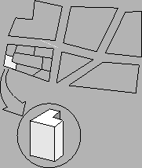
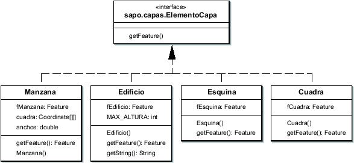

Siguiente: El paquete red
Subir: Arquitectura de paquetes
Anterior: El paquete raster
Índice General
El paquete vectorial
El caso de los datos de manzanas y edificaciones es un poco
diferente, y en general no suelen almacenarse como raster. En este
caso es más conveniente usar algún formato del tipo vectorial,
representándolos por medio de geometrías y asociar mediante
atributos la información que sea de interés almacenar. Para esto se
utilizó la biblioteca JTS (ver sección 6.2.2).
Para el manejo de datos de edificaciones, se eligió representar las
mismas mediante un feature en el cual la geometría es un polígono
que corresponde con la proyección del edificio en el plano
horizontal, y como atributo un valor numérico que representa la
altura. Se está asumiendo que la edificación será un prisma, en el
cual tanto la base como el techo son paralelos al plano horizontal y
tienen la misma proyección, pudiendo ésta adquirir cualquier forma,
no teniendo que ser necesariamente convexa. Esta representación
excluye algún tipo de formas irregulares, pero simplifica
enormemente el problema, siendo que no es de importancia la forma
exacta de las edificaciones. En caso de contar, por ejemplo, con una
vivienda de techo a dos aguas, el usuario deberá tomar algún
criterio y determinar una altura equivalente.
Para la representación de las manzanas se utilizó una representación
mediante polígonos. Estos pueden tener cualquier forma, siendo la
única limitación que las aristas (cuadras) sean líneas rectas. El
número de vértices es arbitrario. En la figura 8.5
se puede visualizar un ejemplo de un trazado de manzana válido.
Figura 8.5:
Ejemplo de trazado de manzanas y edificaciones aceptado por
SAPO
|

|
Figura 8.6:
Diagrama parcial de clases del paquete vectorial
|

|
Siguiente: El paquete red
Subir: Arquitectura de paquetes
Anterior: El paquete raster
Índice General
SAPO